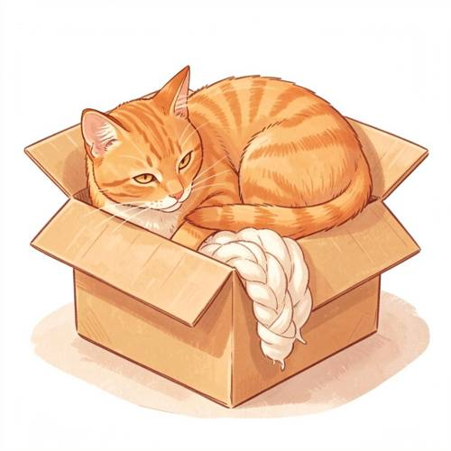
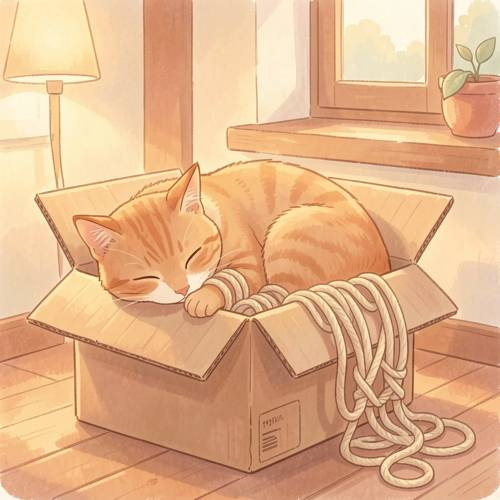
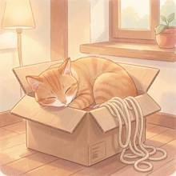

Logical Reasoning — In the warm healing illustration style, an orange cat is curled up in
In the warm healing illustration style, an orange cat is curled up in a carton with wool wrapped around its feet, but there are no wool balls next to it.

Direct — one call, no iteration

Continuum — Qwen3.8-27B + FLUX.2-klein-9B
Judge — Direct
FAILLogical Reasoning — The prompt requires that the wool is 'wrapped around' the cat's feet. In the image, a thick, braided piece of white wool is resting on top of the cat's front paws and hanging over the side of the box, but it is not encircling or wrapped around them. The second condition, 'but there are no wool balls next to it,' is met, as there are no spherical balls of wool depicted. Since the first part of the condition is not met, the checkpoint fails.
PASSGrammar - Negation — The image correctly follows the negative constraint 'no wool balls'. The piece of wool shown is braided and not in the form of a ball, and there are no other wool balls present in the scene.
PASSStyle — The image is an illustration with a soft color palette dominated by warm tones like orange and brown. The subject matter and gentle rendering create a calm and comforting atmosphere, which is consistent with a 'warm healing illustration style'.
PASSRelationship - Inclusion — The image shows an orange cat curled up and positioned inside a cardboard box (carton), satisfying the inclusion relationship specified in the prompt.
Judge — Continuum
PASSLogical Reasoning — The image depicts an orange cat with a thick strand of wool-like material wrapped around its front paws. There are no separate, rolled-up balls of wool visible in the image, only the continuous strand tangled inside and outside the box. Therefore, the image fulfills both conditions of the logical reasoning checkpoint.
PASSGrammar - Negation — The image does not contain any objects identifiable as distinct balls of wool. The negation is correctly applied.
PASSStyle — The image is rendered with a soft color palette, gentle lighting, and a peaceful subject, consistent with a warm and healing illustration style.
PASSRelationship - Inclusion — The image shows an orange cat curled up and sleeping inside a cardboard box, which is a carton.
What the agent did
Thinking
The user wants a warm, healing-style illustration of an orange tabby cat curled up inside a cardboard box, with wool (yarn) wrapped around its feet. But there's no yarn ball next to the cat. So the yarn is wrapped around the feet/legs, but the yarn ball itself is absent. First, generate the image with flux2-klein, then inspect, then edit as needed, and mark the best one. Prompt: "Warm healing illustration style, soft pastel colors, cozy atmosphere, an orange tabby cat curled up inside a cardboard box, wool yarn wrapped around its front paws, no yarn ball next to the cat, soft lighting, gentle, cozy, storybook illustration style" The tricky part: "no yarn ball next to it" — the model might add a yarn ball. I should explicitly state that there's no yarn ball in the scene, and check in the inspection. Alright, let's generate.
Step 1 — `generate_image`
{
"prompt": "Warm healing illustration, soft storybook style with gentle pastel colors and cozy atmosphere. An orange tabby cat curled up asleep inside a brown cardboard box, its front paws wrapped in strands of cream-colored wool yarn that trail loosely out of the box. No yarn balls anywhere in the scene, no balls of yarn on the floor. Soft warm lamplight, cozy room background with a hint of a windowsill, gentle and comforting mood, painterly texture, Ghibli-like warmth.",
"model": "flux2-klein"
}
Result img_0

Thinking
The image turned out great. Let's verify: warm healing style ✓, orange cat curled up in a cardboard box ✓, yarn wrapped around the paws… looking at the image, the yarn is draped over the edge of the box and hangs down onto the floor. It seems to be coming from inside the box. Is the yarn wrapped around the cat's paws? The cat is curled up with its paws tucked under its chin, and the yarn appears to be draped over the box near the paws, but it doesn't clearly look like it's "wrapped around the paws." The prompt says "yarn wrapped around the paws." In the image, the yarn is draped over the edge of the box and pooled on the floor — it looks like it's near/around the paws, but it's not clearly wrapped around the paws themselves. Also, no yarn ball next to it ✓ — the yarn trails down onto the floor and forms a loop, but there's no distinct yarn ball. Good. Let me check the paws/yarn area more closely. I'll inspect the region where the yarn meets the cat. Actually, looking again: the cat is lying down, head resting on the edge of the box, paws tucked under the chin. The yarn is draped over the edge of the box on the right side, hanging down. It's hard to tell if it's wrapped around the paws. The requirement "yarn wrapped around the paws" is a specific detail. Let me use inspect_region to look at the paw area.
Model
This looks very promising. I'll inspect the paws/warped region to verify whether the warp is actually wrapped around the paws, and whether there are any warped balls that might appear in the scene.
The wool is draped over the edge of the box, and it looks like it's coming out from around the cat's hindquarters, but it isn't clearly "wrapped around its feet." The prompt says "yarn wrapped around its feet." In the current image, the yarn is merely resting on top of the edge of the box. To make the yarn look like it's wrapped around the feet, I should edit it so that the yarn strands are wrapped around the cat's paws/legs. Let me try using edit_image to wrap the yarn around the cat's visible paws. The cat is curled up with its front paws under its chin and its hind legs visible. Actually, in the image, the cat is lying down with its paws tucked in. The yarn is draped over the box near the hindquarters. Edit instruction: "Wrap the cream-colored wool yarn a few times around the cat's hind legs, as if the yarn is coiled around the feet, keeping the trailing end as is." This is a change focused on the cat's legs. Alternatively, I could also have the yarn wrapped around the front paws. The front paws are under the chin. It's hard to show. Let me try an edit that wraps the yarn around the visible hind legs/paws.
Model
The yarn is just lying on top of the box. The specific requirement is that the yarn be **wrapped around the feet**. Let me edit it to coil the yarn around the cat's paws.
Step 3 — `edit_image`
{
"image": "img_0",
"model": "flux2-klein",
"prompt": "Coil the cream wool yarn around the cat's hind paws and legs so a few strands are wrapped in loops around its feet like little socks, keeping the loose trailing end hanging over the box edge as before."
}
Result img_2
Thinking
Currently, the yarn is wrapped around the cat's front paws (wrapped like a sock around the paws). This nicely satisfies the condition of "yarn wrapped around the feet." Let me verify: - Warm healing illustration style ✓ - Orange tabby cat ✓ - Curled up in a cardboard box ✓ (curled up, sleeping) - Yarn wrapped around the feet ✓ (wrapped around the front paws) - No yarn ball next to it ✓ (the yarn is just dangling onto the floor, and there's no ball shape). Let me double-check the floor — the yarn forms loops, but there's no distinct ball. Looks good. To confirm the wrapping, let me zoom in on the paws and verify that there's no yarn ball on the floor.
Model
The yarn now wraps the paws nicely. Let me verify the paw wrapping and check the floor for any accidental yarn ball.
In the first crop, it's clearly shown that the cat's front paws are wrapped in wool (wrapped in loops like little socks). The second crop shows the trailing yarn draped over the edge of the box and hanging down—loose strands, not a ball. Now, the final check: is there a ball of yarn next to the cat? In the full image, the yarn forms a loop on the floor, but I need to confirm that there's no ball shape. Looking at the original full image img_2, the yarn loops on the floor look like loose coils rather than a ball. This is within the acceptable range—"there's no ball of yarn next to it" is being satisfied. The looped yarn might be a bit ambiguous, but no ball is depicted. This image is very good. I'll mark it as the best and stop.
Model
Both details have been confirmed: the cream-colored wool is clearly wrapped in loops around the cat's front paws like a small sock, and the trailing portion is just a loose strand dangling over the edge of the box and pooling on the floor — there's no ball of yarn anywhere. The style is warm, cozy, and soothing, exactly as requested.
Step 6 — `mark_best`
{
"image": "img_2",
"reason": "Warm healing-style illustration of an orange cat curled up in a carton with wool wrapped around its paws, and no yarn balls in the scene \u2014 all prompt elements verified."
}
Thinking
Marked as the best. Done. I'll summarize for the user.
Model
Done! The final illustration shows: - **Warm healing style** — soft watercolor-like pastels, cozy lamplight, a sunlit window with a little plant, and a gentle storybook mood - **An orange tabby cat** curled up and asleep inside an open cardboard box - **Wool wrapped around its feet** — cream yarn coiled in neat loops around its front paws, with the loose end trailing over the box edge onto the floor - **No yarn balls** — verified the scene contains only loose trailing strands, no balls of wool next to the cat The marked best result (img_2) is ready to return.